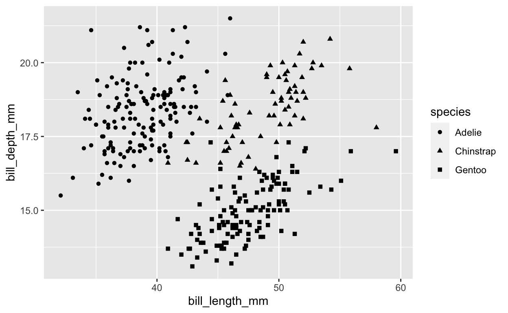
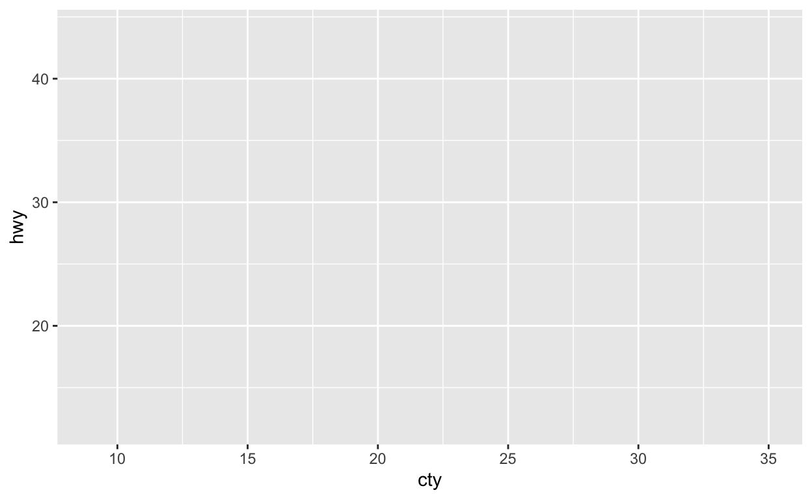
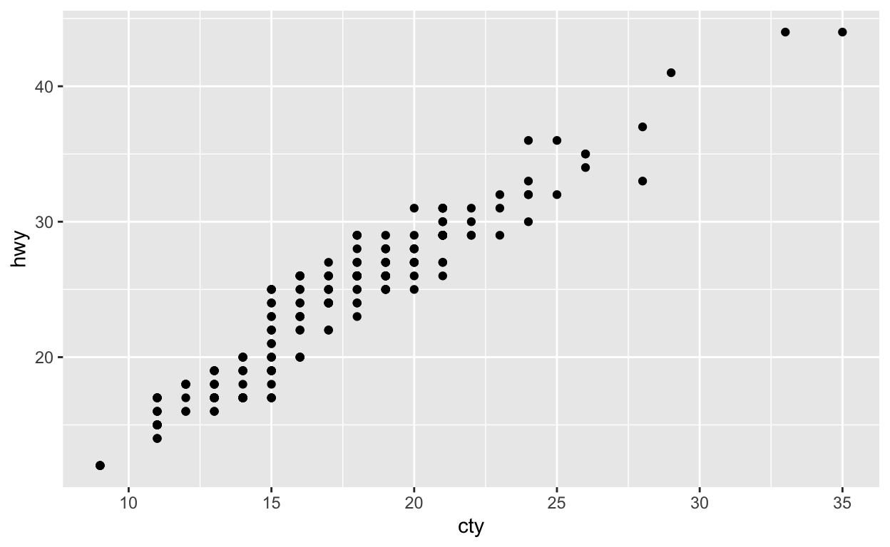

This module explores how R data object types impact our ability to use functions and accomplish tasks like creating data visualizations. The penguins dataset from the {palmerpenguins} package will be used to illustrate our examples.
When we create plots using ggplot2, we have to specify the name of data object and the variables. Object names in R are case sensitive, which means that the pattern of lower and uppercase letters must match exactly.
ggplot(data = penguins) +
geom_point(aes(x = bill_length_mm,
y = bill_depth_mm,
shape = species))
Simply by running the data object name as code, we can print out a summary of the data.
penguinsThis view is helpful, but it may be insufficient for data sets with large numbers of columns.
If we only need a list of variable names, then we can use names() or colnames().
names(penguins)Perhaps we want a more detailed summary of our data. We can use str() (short for structure) to see the name and type of all variables in our data set. Being able to view the variable name and type is especially useful for data visualization because our plot choice will depend on the data type(s) we want to see.
R contains many data object types, including lists, arrays, matrices, vectors, and data.frames. Data.frames are the most commonly used type of data object in R. They are two-dimensional objects, meaning that to identify a specific value in the data set, you need to know two pieces of information: its row and its column position. Data.frames are popular because they provide a logical way to group related variables together.
Let’s look at an example other than penguins.
mtcarsWhen we run the code mtcars, R outputs a rectangular grid of values. In this case, each row represents one type of car, and each column contains data about different aspects of the cars.
We can confirm that mtcars is a data.frame using the class function.
class(mtcars)It is important to verify data object type because data types impact the ways we can access information stored in the data object. We will spend lots of time learning about how to access and extract information from data objects. For now, just know that the object type will determine the kinds of functions and extract methods we can use.
Each of the columns in a data.frame represents a single type of data. The simplest data types are numeric/integer, character, and logical. You can determine a data column’s type using the same class() function we used to verify object type for a data.frame.
To let R know that you want the class of a column and not the whole data object, we use a dollar sign ($) to connect the data object’s name with the column’s name.
class(penguins$species)
class(penguins$sex)
class(penguins$body_mass_g)Print out the mtcars object. Scroll through the pages and look at all of the values.
mtcarsEvery column within a data.frame has values in the same number of rows as every other column. You can prove that all of the variables (i.e., columns) in mtcars have the same number of observations (i.e., rows) using the length() function.
# For example:
length(mtcars$mpg)
length(mtcars$cyl)
length(mtcars$disp) We can verify that mpg, cyl, and disp all have 32 values. Even if we had missing data, we would still include a symbol (NA) in the dataset to indicate that the measurement of that variable for that observation is not available.
Use what you have learned to view the mtcars and penguins datasets and answer the following questions.
# The most helpful functions are the ones that show
# both variable name and type.One of the coolest aspects of programming is the ability to create and innovate. You are not restricted to templates or pre-selected options.
In R, we create new objects using the assignment operator (<-). When reading code, the assignment operator is read as “gets the value of”. For example, x <- 2 is read as “x gets the value of two”.
We can store all kinds of things in R objects, including entire plots. One reason we might store a plot is that we want to make lots of plots that share some code. Rather than write out the same lines repeatedly, we save the portion of code that is shared and add on the unique parts.
You have seen this strategy before in the ggplot2 cheatsheet. The section dedicated to plotting two continuous variables begins with the following code:
e <- ggplot(mpg, aes(cty, hwy))If we try to examine the output of this code, we will probably be disappointed because it will look like nothing happened. The reason for this is that R does not print out anything to the screen when new objects are created.
e <- ggplot(mpg, aes(cty, hwy))We have to run the object name (e) to see what is stored.
e
This plot shows our x and y aesthetics (cty and hwy, respectively), and the numbers on the axes seem reasonable for those variables, but there are no points, bars, lines, boxplots, or anything.
And there will not be anything in the plot area until we specify a geom.
e + geom_point()
You will know you have successfully created a new object when you see it appear in the Environment tab in RStudio or see it listed when you run the function ls(). Importantly, there are times when you will run code and not see objects appear. Right now, you are in a learnr module, so you will not see any changes to the Environment tab. You also will not see changes when you knit R Markdown scripts.
my_data <- c(4, 5, 6, 7)Did anything happen? It might have looked like nothing happened because when we create new objects in R, R does not print anything to the screen. In order to see your new object, you need to go back to the code block and type my_data in line 3 and then click Run Code.
Now, you should see a print out reading [1] 4 5 6 7. The [1] indicates the first line in the output (you will see more numbers for longer outputs) and the 4 5 6 7 is the data stored in the object my_data.
How can we confirm that my_data is a data.frame? Run the code to verify your answer.
my_data# There is a function we can use that will tell us
# the specific kind of object something is in R.
# Do you remember its name?class(my_data)